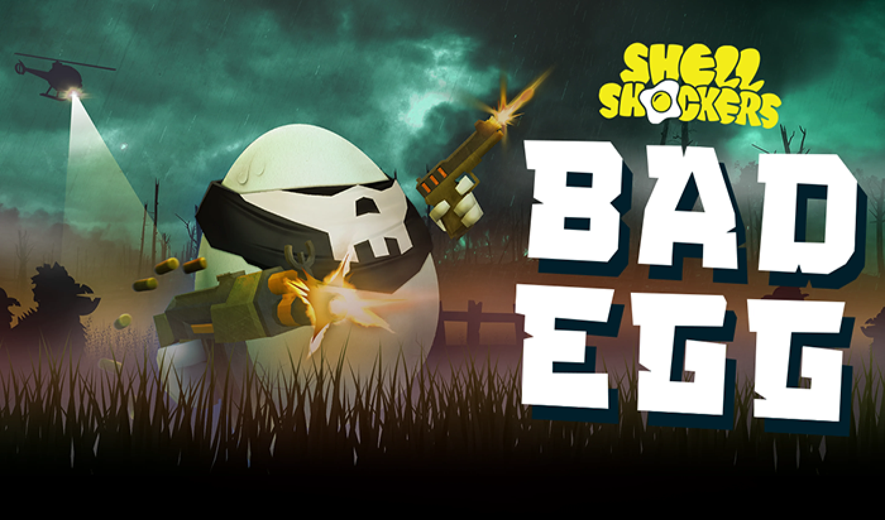
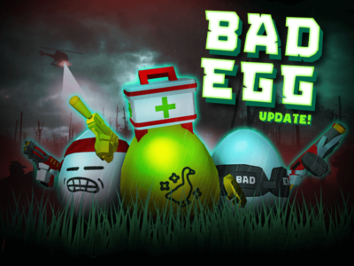

Introduction
Badegg.io is a chaotic, physics-based multiplayer arena game where your ultimate goal is to be the last egg standing. Unlike traditional shooters, this unique 2D online platformer challenges you to push rival eggs off the map using momentum and strategic collisions. What makes Badegg.io truly special is its addictive growth mechanic: as you eliminate chickens and collect their dropped egg fragments, your own egg grows larger and gains powerful upgrades. Players love the game for its fast-paced, unpredictable matches that perfectly blend sumo-style wrestling with resource gathering. Whether you are playing casually or competing fiercely, the vibrant community and dynamic procedural maps ensure every round feels fresh. It is a brilliant test of reflexes, positioning, and tactical aggression that keeps you coming back for just one more match.
Getting Started

Starting your journey in Badegg.io is incredibly straightforward. Simply navigate to the official website and jump straight into a match using your web browser. The game is played using your WASD keys for movement and the mouse for aiming and executing special abilities or directional boosts. When the match begins, your immediate objective is to locate scattered egg fragments and eliminate smaller chickens to gain mass. As you collect these resources, your egg physically grows, increasing your collision force. To push other eggs out of the arena, you must build up momentum and ram into opponents at the right angle. Keep an eye on the arena edges; a single miscalculated push can send you plummeting into the void. In your first few games, focus purely on survival and gathering fragments rather than engaging in early fights. Once you reach a moderate size, you can start using your increased mass to bully smaller eggs and dominate the battlefield.
Basic Tips
To survive your early matches in Badegg.io, keep these essential tips in mind. First, always prioritize gathering egg fragments over early combat; a larger egg naturally wins physics collisions, so size is your best weapon. Second, use the arena edges to your advantage by trapping smaller opponents against the boundaries where their escape routes are limited. Third, never attack an egg that is noticeably larger than you; instead, retreat and farm chickens until you match or exceed their mass. Fourth, master the basic dash mechanic using your mouse and WASD to suddenly change your trajectory, making you a much harder target to knock off the map. Finally, keep your movements unpredictable; moving in straight lines makes it easy for opponents to calculate your collision vector and push you out. By focusing on steady growth and smart positioning, you will quickly transition from a fragile beginner to a formidable contender.
Advanced Strategies
Experienced players in Badegg.io rely on advanced physics manipulation to secure victories. One highly effective strategy is the slingshot maneuver, where you use the arena boundaries to bounce off the walls at high speeds, catching larger opponents off guard with an unexpected angle of attack. Another crucial tactic is resource denial; instead of just collecting fragments, actively intercept them right before a rival egg reaches them, stunting their growth while accelerating your own. When fighting multiple enemies, utilize the battering ram approach by targeting the smallest egg in a cluster, using their body as a projectile to knock into and eliminate their larger teammates. Additionally, mastering the upgrade system is vital; allocate your earned points into shield generation when you are the largest egg to protect your lead, or invest in speed boosts when you are smaller to escape dangerous encounters. These strategies shift the gameplay from simple pushing to deep, calculated tactical warfare.
Pro Tips

To truly dominate in Badegg.io, you must master micro-movements and momentum cancellation. Good players know how to dash, but great players use rapid, alternating WASD taps to instantly halt their momentum, tricking opponents into missing their collision attacks and falling off the edge themselves. Secondly, learn to feint by accelerating toward an enemy and abruptly stopping at the last pixel, forcing them to overextend and push themselves out of the arena. Finally, pay close attention to the seasonal updates and limited-time challenges; these events often introduce exclusive egg variants with unique physical properties, like altered friction or specialized shield mechanics, giving you a distinct edge in competitive lobbies.
Conclusion
Badegg.io offers a thrilling, physics-driven experience that perfectly balances chaotic fun with strategic depth. Whether you are aggressively ramming rivals off the map or carefully farming fragments to grow, every match is a unique test of skill. Jump into the arena, master the momentum, and prove you have what it takes to be the last egg standing!